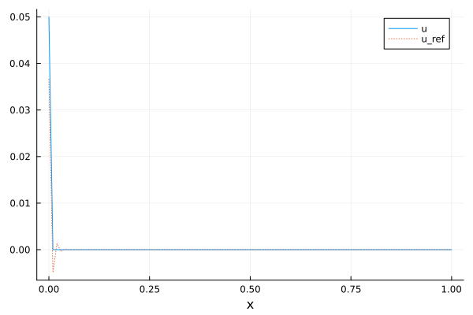
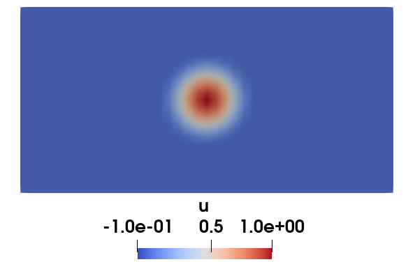

Linear transport (FEM-SUPG)
This example demonstrates the application of the FEM Streamline Upwind Petrov-Galerkin method to a linear transport equation.
Maths
There are several ways to present the method, here is one adapted from the book of Zienkiewicz et al. (The Finite Element Method for Fluid Dynamics).
We consider the following transport equation:
\[\begin{aligned} \partial_t u + c \cdot \nabla u = 0 \\ u(0, t) = u_{in}(t) \end{aligned}\]
where $c$ is the transport velocity. To ease the demonstration, we restrict ourselves to a 1D equation at a constant velocity : $\partial_t u + c \partial_x u = 0$. Let's introduce $\chi(t)$ a (characteristic) curve corresponding to this equation, then
\[\dfrac{du}{dt} = \dfrac{\partial \chi}{\partial t} \dfrac{\partial u}{\partial x} + \dfrac{\partial u}{\partial t}\]
so that with $\partial \chi / \partial t = c$ we have that $du/dt$ is zero along the characteristic curve. Let's note $u^n(x)$ the solution at point $x$ and time $n \Delta t$. Let's also note $\delta = c \Delta t$ and apply a first order Taylor expansion in time for $du/dt$:
\[\dfrac{1}{\Delta t}(u^{n+1}(x) - u^n(x - \delta)) = 0\]
The $x - \delta$ comes from the fact that we are differentiating along the characteristic curve. Then, a Taylor expansion in space of $u^n(x - \delta)$ leads to
\[u^n(x - \delta) = u^n(x) - \delta \partial_x u^n + \dfrac{\delta^2}{2} \partial^2_x u^n\]
The time-space discretization now reads
\[u^{n+1} = u^n - \delta \partial_x u^n + \dfrac{\delta^2}{2} \partial^2_x u^n\]
To compute the weak form, we multiply by a test function $v$ and integrate over the whole domain. An integration by parts is performed on the last term, ignoring boundary terms for this specific example.
\[\begin{aligned} & \int_\Omega u^{n+1} v = \int_\Omega u^n v - \int_\Omega \delta (\partial_x u^n)v + \int_\Omega \dfrac{\delta^2}{2} (\partial^2_x u^n) v \\ & \int_\Omega u^{n+1} v = \int_\Omega u^n v - \int_\Omega \delta (\partial_x u^n)v - \int_\Omega \dfrac{\delta^2}{2} \partial_x u^n \partial_x v \\ & \int_\Omega u^{n+1} v = \int_\Omega u^n v - \int_\Omega \delta (\partial_x u^n) \left(v +\dfrac{\delta}{2} \partial_x v \right) \\ \end{aligned}\]
Hence, the weak formulation is quite straigthforward, it simply consists in replacing the test function $v$ in the advection term by $v + c\Delta t \partial_x v / 2$.
Code : 1D domain with Dirichlet condition
using Bcube
using LinearAlgebra
using StaticArrays
using PlotsSimulation parameters
The degree controls the polynomial order of the finite-element basis functions. Here we use linear (P1) elements.
nite is the total number of time steps to perform. Together with the time step Δt (computed below from the CFL condition), it determines the total physical simulation time.
The CFL (Courant–Friedrichs–Lewy) number is a dimensionless quantity that relates the time step to the spatial discretization and the advection speed. For an explicit scheme the CFL must remain ≤ 1 for stability; here we choose 0.5 to provide a safety margin.
nx is the number of nodes (not cells) along the 1-D domain, and lx is the physical length of the domain. The velocity c is stored as a StaticArray (SVector) of size 1 since this is a 1-D problem.
const degree = 1 # Function-space degree
const nite = 250 # Number of time iteration(s)
const CFL = 0.5 # CFL number
const nx = 101 # Number of nodes in the x-direction
const lx = 1.0 # Domain width
const c = SA[1.0] # Transport velocity
@assert degree >= 1 "Cannot apply Dirichlet when degree = 0!"Mesh and output directory
line_mesh builds a uniform 1-D mesh on the interval [0, lx] with nx nodes. The names keyword assigns human-readable labels to the two boundary endpoints: the left end ("West") and the right end ("East"). These names will be used later to prescribe Dirichlet boundary conditions.
mesh = line_mesh(nx; xmax = lx, names = ("West", "East"))All generated files (animation, snapshots, etc.) will be stored in the following directory, created relative to the source file location.
out_dir = joinpath(@__DIR__, "..", "..", "myout", "transport_supg")
mkpath(out_dir)Time step from the CFL condition
The CFL condition for 1-D advection reads: CFL = c Δt / Δx. Solving for Δt gives: Δt = CFL × Δx / c, where Δx = lx / (nx - 1) is the uniform cell size. We use norm(c) so the formula is valid even if c were a multi-dimensional vector.
const Δt = CFL * lx / (nx - 1) / norm(c)
t = 0.0 # Current physical time, updated at each iterationInlet (West) boundary condition
f_west(t) prescribes the value of u at the left boundary as a function of time. A sinusoidal signal is used here because it starts at zero (smooth startup). To inject a square wave instead, simply replace this with f_west(t) = 1.0.
f_west(t) = sin(10 * t) # better start with 0 at t=0Function space and finite-element spaces
A FunctionSpace defines the type of polynomial basis functions used on each cell. Here we choose Lagrange elements of the given degree.
fs = FunctionSpace(:Lagrange, degree)The TrialFESpace is the space of unknown (trial) functions. It is built on top of fs and the mesh. A Dirichlet boundary condition is attached to the "West" boundary: at each time t, the boundary value is f_west(t). The PhysicalFunction wraps a user-provided function of the physical coordinate x so that Bcube can evaluate it on quadrature points.
U = TrialFESpace(fs, mesh, Dict("West" => t -> PhysicalFunction(x -> f_west(t))))The TestFESpace is derived from the trial space U. In a standard Galerkin method, the test space coincides with the trial space (minus the Dirichlet degrees of freedom). In SUPG, the test function will be modified later (see supg below), but the underlying FE space V remains the same.
V = TestFESpace(U)Integration measure
dΩ is a measure over the computational domain (all cells of the mesh). The second argument is the quadrature degree: it must be high enough to integrate the polynomial expressions appearing in the bilinear forms exactly. A common rule of thumb is 2 * degree + 1, which is sufficient for mass and stiffness integrals of order up to 2 * degree.
dΩ = Measure(CellDomain(mesh), 2 * degree + 1)Cell characteristic length 'h'
MeshCellData stores per-cell quantities. Here we compute, for each cell, the integral of the constant function 1, which in 1-D simply yields the cell length Δx. This per-cell length (often denoted 'h') can be used in alternative SUPG formulations that express the stabilization parameter via h instead of Δt (see the commented-out alternative below).
vol = MeshCellData(Bcube.compute(∫(PhysicalFunction(x -> 1))dΩ))SUPG modified test function
The key idea of SUPG (Streamline Upwind Petrov–Galerkin) is to replace the standard test function v by a modified test function ṽ that adds a perturbation along the streamline direction (i.e. along the velocity c). This introduces an artificial diffusion aligned with the flow, which stabilizes the numerical solution without polluting the crosswind direction.
Two equivalent formulae can be used (see also the theoretical section above):
Time-based form: ṽ = v + (Δt / 2) (c · ∇v)
Space-based form (using the cell size h and CFL number α): ṽ = v + α (h / 2) (c / |c|) · ∇v where α = c Δt / h = CFL.
Both are equivalent when the mesh is uniform. We use form (1) here.
supg(v) = v + Δt / 2 * c ⋅ ∇(v)
# supg(v) = v + CFL * h / (2 * norm(c)) * (c ⋅ ∇(v))Bilinear forms: mass and convection (advection)
a(u, v) is the standard mass bilinear form: ∫Ω u v dΩ. It does not involve the SUPG modification — the test function v is used as-is.
b(u, v) is the convection bilinear form: ∫Ω (c · ∇u) ṽ dΩ. Here the SUPG-modified test function supg(v) replaces v. This is the only place where SUPG enters the formulation; the mass term is left unchanged.
a(u, v) = ∫(u ⋅ v)dΩ # Mass bilinear form : no supg
b(u, v) = ∫((c ⋅ ∇(u)) ⋅ supg(v))dΩ # Convection bilinear formAssembly and time-stepping matrix
A and B are the global finite-element matrices assembled from the bilinear forms a and b, respectively, on the trial/test spaces U and V.
The semi-discrete equation after time discretization is:
\[ A u^{n+1} = A u^n − Δt B u^n\]
which can be written as:
\[ u^{n+1} = (I − Δt A^{-1} B) u^n\]
The matrix M = I − Δt A^{-1} B is thus the explicit time-stepping operator. Beware: forming the dense inverse inv(Matrix(A)) is very expensive for large problems! In production code one should instead solve the linear system A x = B u^n with a sparse direct or iterative solver at each step.
A = assemble_bilinear(a, U, V)
B = assemble_bilinear(b, U, V)
M = I - Δt * inv(Matrix(A)) * B #WARNING : really expensive !!!Finite-element functions for the solution and the reference
u will store the computed numerical solution. Its degree-of-freedom (dof) vector is initialized from the Dirichlet boundary condition at t = 0.
u_ref is an auxiliary FE function used to visualize the analytical (reference) solution. Since the exact solution is projected onto the same FESpace via an L² projection, u_ref represents the best possible representation of the exact solution in this discrete space — it is not the exact solution itself but its FE interpolation.
u = FEFunction(U)
apply_dirichlet_to_vector!(u.dofValues, U, V, mesh, t)
u_ref = FEFunction(U)Prepare animation
For this simple 1-D structured mesh with a Lagrange FESpace, the nodal dof values are ordered consistently with the mesh nodes. We can therefore extract the x-coordinates of the nodes into a plain vector and plot them directly against u.dofValues.
anim = Animation()
x = [get_coords(node, 1) for node in get_nodes(mesh)]Time loop
At each iteration we:
- Advance the physical time by Δt.
- Apply the explicit time-stepping matrix M to update the solution.
- Re-apply the Dirichlet boundary condition at the new time (since the matrix update does not enforce boundary values).
- Compute the reference (analytical) solution by L² projection for comparison.
- Capture a frame of the current solution vs. reference for the animation.
for i in 1:nite
global t
# 1. Advance time
t += Δt
# 2. Explicit time step
# Multiply the dof vector by the pre-computed operator M.
# This advances the solution from u^n to u^{n+1}.
set_dof_values!(u, M * get_dof_values(u))
# 3. Enforce Dirichlet boundary condition
# After the matrix multiplication, the boundary dof(s) no longer respect
# the imposed inlet value, so we overwrite them. An alternative approach
# would be to modify M directly (e.g. set M[1,:] = [1, 0, ..., 0]) so that
# the boundary is automatically enforced at each step.
apply_dirichlet_to_vector!(u.dofValues, U, V, mesh, t)
# 4. Reference solution
# For the pure advection equation ∂_t u + c ∂_x u = 0, the exact solution
# is simply the inlet signal transported at speed c:
# u_exact(x, t) = f_west(t - x / c) when t - x/c > 0 (signal has arrived)
# u_exact(x, t) = 0 otherwise (signal not yet arrived)
# We project this analytical expression onto the FESpace via an L²
# projection to obtain `u_ref`, which is the best interpolate of the exact
# solution in the FE space.
projection_l2!(
u_ref,
PhysicalFunction(x -> (x[1] - c[1] * t) > 0 ? 0.0 : f_west(t - x[1] / c[1])),
mesh,
)
# 5. Animation frame
# Plot the computed solution (solid line) and the reference (dotted).
plt = plot(x, u.dofValues; label = "u", xlabel = "x")
plot!(x, u_ref.dofValues; label = "u_ref", ls = :dot)
frame(anim, plt)
endSave and display the animation
The GIF is written to the output directory. In interactive (non-test) mode the animation is also displayed in the REPL / plot pane.
g = gif(anim, joinpath(out_dir, "transport_supg.gif"))
#! format: off
display(g)
#! format: on
Code : 2D domain with periodicity
Let's now solve the same equation but on a rectangular (2D) domain.
Note
For didactic purpose the code is copied here but note that the previous 1D code could be put into a function and then re-used for the 2D domain with only minor adjusments.
First, let's build a rectangular domain and the periodic face domains associated with it. We impose a periodicity in both x and y directions. The order between donor and receiver must be consistent with the input transformation (here a Translation).
mesh = rectangle_mesh(41, 31; xmax = 2, ymax = 1.0)
perio_x = PeriodicBCType(Translation(SA[2.0, 0.0]), "xmin", "xmax")
perio_y = PeriodicBCType(Translation(SA[0.0, -1.0]), "ymax", "ymin")
Γ_perio_x = BoundaryFaceDomain(mesh, perio_x)
Γ_perio_y = BoundaryFaceDomain(mesh, perio_y)Now, define the FESpace and specify the periodicity conditions (there is no more Dirichlet condition for this case).
U = TrialFESpace(FunctionSpace(:Lagrange, 1), mesh; periodicity = (Γ_perio_x, Γ_perio_y))
V = TestFESpace(U)The rest of the code is now almost the same as above, including the SUPG modification for the test function.
c_2D = SA[2.0, 1.0]
Δt_2D = CFL * min(2.0 / (41 - 1), 1.0 / (31 - 1)) / norm(c_2D)
dΩ = Measure(CellDomain(mesh), 2 * degree + 1)
supg_2D(v) = v + Δt_2D / 2 * c_2D ⋅ ∇(v)
a_2D(u, v) = ∫(u ⋅ v)dΩ
b_2D(u, v) = ∫((c_2D ⋅ ∇(u)) ⋅ supg_2D(v))dΩ
A = assemble_bilinear(a_2D, U, V)
B = assemble_bilinear(b_2D, U, V)
M = I - Δt_2D * inv(Matrix(A)) * BThis time, we will initialiaze the FEFunction with a smooth bump near the center of the domain. To set each dof value with a given analytical function we use the FEFunction(::TrialFESpace, ::AbstractMesh, ::AbstractLazy) constructor.
x0 = SA[1.0, 0.5]
r = 0.25 # bump radius
_a, _b = SA[
r^3 r^2
3*r^2 2*r
] \ SA[-1.0; 0]
f = PhysicalFunction(x -> begin
dx = norm(x - x0)
dx < r ? _a * dx^3 + _b * dx^2 + 1.0 : 0.0
end)
u = FEFunction(U, mesh, f)To build an animation, we use this time a VTK export.
using BcubeVTK
d = Dict("u" => u)
path = joinpath(out_dir, "periodic_rectangle.pvd")
write_file(path, mesh, d, 0, 0.0) # init exportRun !
t = 0.0
for i in 1:nite
global t += Δt_2D
set_dof_values!(u, M * get_dof_values(u))
write_file(path, mesh, d, i, t; collection_append = true)
endThe obtained result is the following one:

This page was generated using Literate.jl.